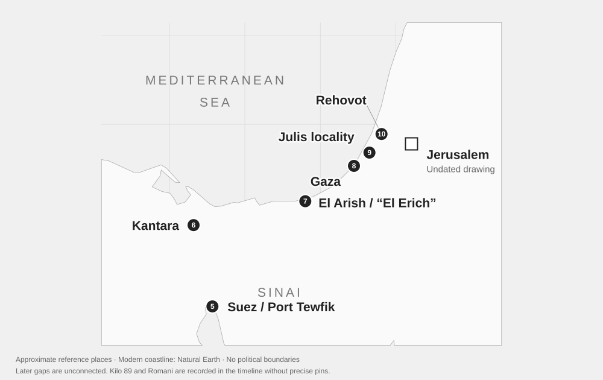

Chronology
Dates, places and source excerpts. Memorial dates and addresses do not establish personal travel.
The maps locate named places. Dashed connections show sequence, not a recovered sailing track. Use the source photographs to assess the readings; sketches and dated headings do not prove visits.


9–11 April 1941 · Embarked & departed
Embarkation, Sydney
Bernard records boarding on 9 April and leaving Sydney on Queen Elizabeth on Good Friday, 11 April.
Embarked Sydney 9/4/41
IMG_0911 — Right page—journey record
Embarked Q E 9/4/41
Left Sydney on Queen Elizabeth 11/4/41
IMG_0911 — Right page—journey record
Left Sydney Good Friday 11/4/41
16–19 April 1941 · Arrival & departure
Fremantle
The two voyage accounts give arrival on 16 April and departure on 19 April. They do not record a visit ashore.
Arrived Fremantle 16/4/41
Arrived Fremantle 16/4/41
IMG_0911 — Right page—journey record
left Fremantle 19/4/41
left Fremantle 19/4/41
Anzac Day · April 1941 · Shipboard note
Anzac Day
Between the Fremantle and Ceylon entries, Bernard notes ten minutes’ silence for Anzac Day and the burial of a crew member at sea.
No position is given. The text does not supply a separate numerical date for the burial; no point has been interpolated along the route.
Anzac day 10 min silence Burial of member of crew
Anzac day. 10 Min silence. Burial at sea. member of crew.
26–27 April 1941 · Port call · remained aboard
Trincomalee, Ceylon
He describes a green, pretty harbour, arriving at 6:30 am on 26 April and leaving at 4 pm on 27 April. He was not allowed ashore.
The diary spells the port TRINCOMILEE. Trincomalee is the map identification; Ceylon is the period name used in the diary.
Arrived TRINCOMILEE [inserted: 6/30 am] Ceylon 26/4/41 (Sat)
Arrived TRINCOMILEE Ceylon Saturday 26/4/41 @ 6/30 am
IMG_0911 — Right page—journey record
Not allowed on shore. Remained at this place all day Sunday.
IMG_0911 — Right page—journey record
at Trincomilee Sunday [inserted: 27/4/41]
left Trincomilee 4 pm 27/4/41
Hmas Canberra, Escorts Q E & Q M out of port. for Sea at. 4 pm. 27/4/41
28 April 1941 · At sea · unlocated
Queen Elizabeth and Queen Mary
A brief pencil entry mentions Q E and Q M travelling together. The speed and following sea description are uncertain.
The notebook provides no position. Its tentative speed has not been used to calculate distance or fill a ship’s track.
Q E & Q M. 28/4/41 Travelling at [30?] K [Sea?] [swelly?].
1 May 1941 · Sighting · unlocated
Land on the starboard side
The ink account records unnamed land and a strange ship. The land has not been identified from an expected shipping route.
The year follows from the surrounding 1941 voyage entries.
1st May sighted land on starboard side a strange ship.
2 May 1941 · Passed · no landing recorded
Passing Aden
Aden is recorded at about 9 pm local time. The verb is “Passed”; the diary does not describe docking or going ashore.
The pin locates Aden as a reference point. It does not mark the ship’s position.
2/5/41 Passed Aden at about 9 pm (local time)
3–6 May 1941 · Arrival & anchorage
Suez / Port Tewfic
The pencil and ink accounts both place arrival on 3 May. Bernard describes ships at anchor and the entrance to the Suez Canal. His own disembarkation follows on 6 May.
Nearby wording about Saturday, Sunday and an inserted “4th” is ambiguous. A much fainter inside-cover note reads Arrived [Suez?] [7/5/41?], with Gaza an alternative place reading. The map follows the repeated clear 3 May arrival.
Additional source: IMG_0904
May 3rd Saturday 4 pm arrived Port Suez.
May 3rd Saturday. arrived Port Tewfic
IMG_0911 — Right page—journey record
(Saturday night till Monday) at anchor in Suez.
IMG_0911 — Right page—journey record
Saturday [inserted: 4th] Sunday we are anchored in Suez.
We pass desolated shores up coast on opposite Arabian side of Red Sea.
6 May 1941 · 6 am · Transfer & canal passage
Leaving Queen Elizabeth
Bernard records disembarking at 6 am and transferring to a smaller ship for the canal journey to Kantara.
The smaller vessel’s name remains [Euphthopea?] in one account and [Euthopea?] in the other. The separate timetable on photograph 0912 corroborates the date without naming the port.
Tuesday 6/5/41 we Disembark from Q E. @ 6 am & re-embark on small ship [Euphthopea?]
on 6/5/41 we disembarked from Q.E. to small ship [Euthopea?]
IMG_0911 — Right page—journey record
Tuesday 6.5.41 Disembarking
we came down Suez Canal to Kantara
IMG_0911 — Right page—journey record
along Canal. Arrived at El Kantara
6–7 May 1941 · Disembarked & entrained
Kantara
He records arriving about 4 pm on 6 May, eating sausages, potatoes and peas, and boarding a train at 5:30 am on 7 May for Gaza.
The preceding passage names Kantara East as the expected entraining point; the arrival sentences say El Kantara or Kantara.
Arrived at El Kantara about 4 pm disembarked
Kantara, we disembark & are taken to receiving depo that night.
IMG_0911 — Right page—journey record
the lads will be Entrained at Kantara East.
Entrained at 5·30 am on 7/5/41 Wednesday.
Early on 7/5/41 we are Entrained for Gaza
7 May 1941 · Passed by rail
Romani
Romani appears among the places passed on the train journey from Kantara towards Gaza.
The date is carried from the surrounding 7 May railway entry. A named passing place does not establish a stop or time there.
passed through Romani. El Erich.
Passed through Romani & El Erich
7 May 1941 · Passed by rail
El Erich / El Arish
The same railway passage names El Erich. The companion map identifies this as the El Arish area, retaining the diary’s spelling in the evidence.
This is a geographical identification, not a correction to the faithful transcription. No arrival time is recorded.
passed through Romani. El Erich.
Passed through Romani & El Erich
7 May 1941 · about 3 pm · Arrival
Arrival at Gaza
The ink journey account records arrival at Gaza about 3 pm after the train journey.
Kilo 89 is separately recorded on the same date. The notebook does not describe the connection between the Gaza arrival and the camp.
Early on 7/5/41 we are Entrained for Gaza, arriving about. 3 pm
7–17 May 1941 · Arrival & departure · no exact pin
Kilo 89
The tent-list page records arrival at Kilo 89 on 7 May and departure on 17 May. The movement note says he left to join 3rd Btn at JULIUS.
Australian War Memorial captions associate Kilo 89 with Gaza Ridge. An exact camp position has not been established here, so it stays in the timeline without a pin.
Arrived Kilo 89 7/5/41
IMG_0911 — Left page—tent list and movements
left Kilo 89 on 17/5/41
IMG_0911 — Left page—tent list and movements
left Kilo 89 on 17/5/41 to JOIN 3RD BTN AT JULIUS.
17 May 1941 · Arrival at unit
Julis / “JULIUS”
One page records arrival at the unit at Julis, [Gellibrand?] lines. Another says he left Kilo 89 to join 3rd Btn at JULIUS.
Archive sources associate Gellibrand with the historical Julis camp near the Gaza–Tel Aviv road. The camp’s precise position is not asserted; the handwriting’s [Gellibrand?] remains tentative.
Arrived unit Julis. [Gellibrand?] lines 17/5/41
IMG_0911 — Left page—tent list and movements
JOIN 3RD BTN AT JULIUS.
left Kilo 89 on 17/5/41
IMG_0911 — Left page—tent list and movements
left Kilo 89 on 17/5/41 to JOIN 3RD BTN AT JULIUS.
25 May 1941 · Recorded destination
Rehovot · 7 AGH
The entry records leaving for Rehovot, 7 AGH, on 25 May.
The reading copy identifies Rehovot and 7 AGH from the handwriting and the hospital record.
left for [Rehovoth?] [7 AGH?] 25/5/41
12 June · year inferred · Service record · location unstated
Guard Battalion note
A march-in note names 1st Aust Corps Guard Btn and 16 ITB Special wing, followed by June 12 and an order reference.
1941 is inferred from surrounding notes. June 12 may relate to the event or the cited order; the entry does not state a location.
Marched in 1st Aust Corps Guard Btn from 16 ITB Special wing June 12 B/O [158?] of 12 Ju
Possibly 22 June 1941 · Sketch · date uncertain
Gaza cemetery sketch
A page holds a memorial sketch and a small cemetery plan. The date beside the lower drawing is tentatively read [22/6/41?].
The date and an actual visit are not securely established. This is shown as a notebook record, separate from the names page whose heading has a disputed June/September date. The pin indicates Gaza generally, not a verified drawing viewpoint.
Gaza Cemetry
IMG_0916 — Upper sketch and inscription
[22/6/41?]
IMG_0916 — Lower plan and caption
Gaza war cemetry
20 July 1941 · Dated note
Gaza Ridge · 20 July
A pencil line names Gaza Ridge and A.A.P.D., with the date 20 July.
The final word remains uncertain. See the reading-copy revision ledger.
[Gaza Ridge?] [illegible] 20/7/41 [Said?]
21 July 1941 · Funeral note
Gaza hospital · Funeral note
The notebook records a funeral cortege from Gaza hospital, of 9th Battalion.
Gaza and cortege were clarified on renewed image review.
Funeral [cortage?] from [Eya?] hosp[ital?] of 9th Batt 21/7/41.
4 August 1941 · Departure · port reading uncertain
Departure from port [Tewfic?]
A later note records leaving port [Tewfic?] on 4 August, followed by HMT PP.
No destination is recorded. HMT PP has not been expanded into a ship name, and the intervening movements have not been reconstructed.
Left port [Tewfic?] 4/8/41 [Per?] HMT PP
9/10 August 1941 · Dated note · meaning uncertain
August note
A short note among addresses has Saturday inserted above Sunday, with 9/10 Aug 1941 and At [rom Catholic?].
Neither a location nor the note’s purpose is established. Nearby addresses have not been turned into travel stops.
[inserted: Saturday] Sunday 9/10 Aug 1941 At [rom Catholic?]
23 June or September 1941 · disputed · Heading · month disputed
Gaza heading (date uncertain)
A heading beginning Gaza introduces names, units and earlier dates, apparently memorial or grave information. Its month may be June or September.
The date is transcribed [23/9/41?], with 23/6/41 a plausible alternative. The heading does not explicitly record arrival or a cemetery visit. Dates from 1917–1918 concern the listed names. This record is excluded from month-specific ordering.
Gaza [23/9/41?]
Undated · Undated drawing
Jerusalem War Cemetery
A pencil gateway frames a path, grave markers and a cross. The inscription above names Jerusalem War Cemetery.
There is no visit date. The 1914–1918 wording belongs to the inscription. This reference place is not connected into the dated travel route.
Jerusalem War Cemetery
Undated · Undated drawing
Suez sketch
A simple pencil outline is labelled SUEZ and Port Tewfic. The port is also named in the dated voyage entries.
Those other entries do not date the sketch. No particular mountain, coast or viewpoint has been assigned to the outline.
SUEZ Port Tewfic